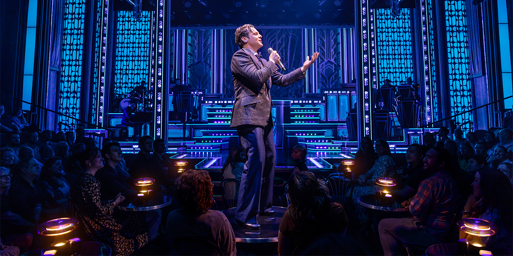

Buying Tickets
For best ticket options, always compare official ticket sites before buying. Look for seat maps, prices, and any possible lottery or rush ticket options, either online or in person at the box office.
Visiting Broadway can feel exciting for most people, but also overwhelming for those visiting for their very first time. This guide gives simple tips about theaters, tickets, arrival time, and show etiquette.
For best ticket options, always compare official ticket sites before buying. Look for seat maps, prices, and any possible lottery or rush ticket options, either online or in person at the box office.
Plan to arrive at least 30 minutes before showtime. This gives you time to find the theater, use the restroom, look at and perhaps buy merchandise, and locate your seat.
Be respectful of other audience members and the performers. Avoid talking during the show, and silence and turn off your phone, and wait until intermission to leave your seat unless necessary.
Think about what you like and are interested in before choosing a show. Broadway has a lot to offer! This includes musicals, dramas, comedies, and unique shows!
If you are new to Broadway, start with a show that matches your favorite movie, book, music style, or genre. Some of our favorites are The Outsiders, The Lost Boys, and The Great Gatsby!
For official Broadway information, visit Broadway.com.
